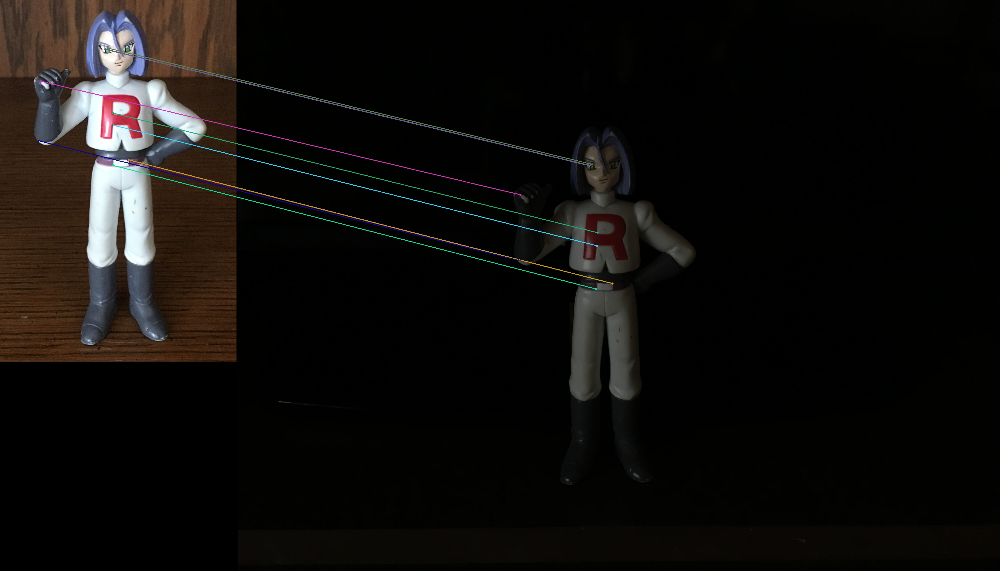
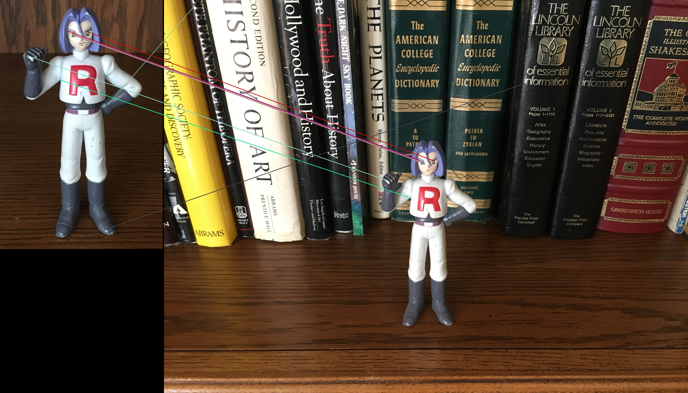
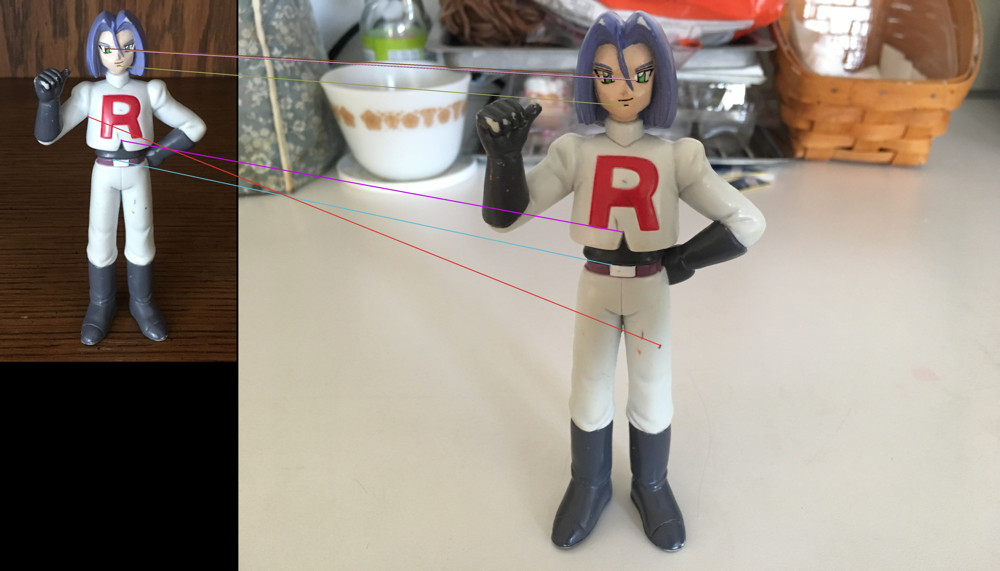
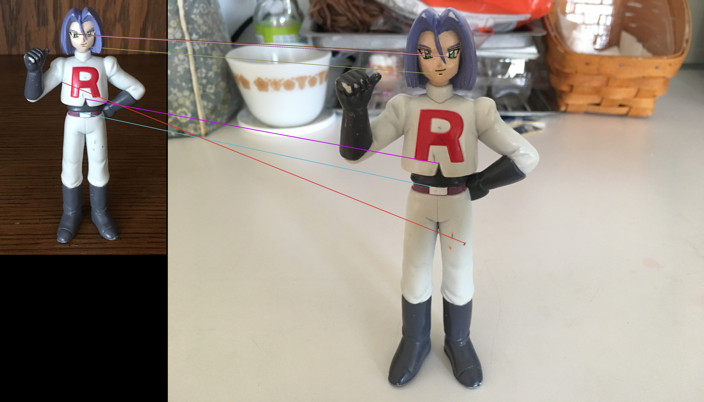

Feature Detection

Concept:
This is an example output of running the ORB (Oriented FAST and Rotated BRIEF) feature matching algorithm on some of my own photos. The results clearly demonstrate that ORB is lighting and scale invariant, and though ORB is further rotation invariant and resistant to noise, my rotation images yielded poor results (will add those to this set soon). Only the top ten matches are rendered.


